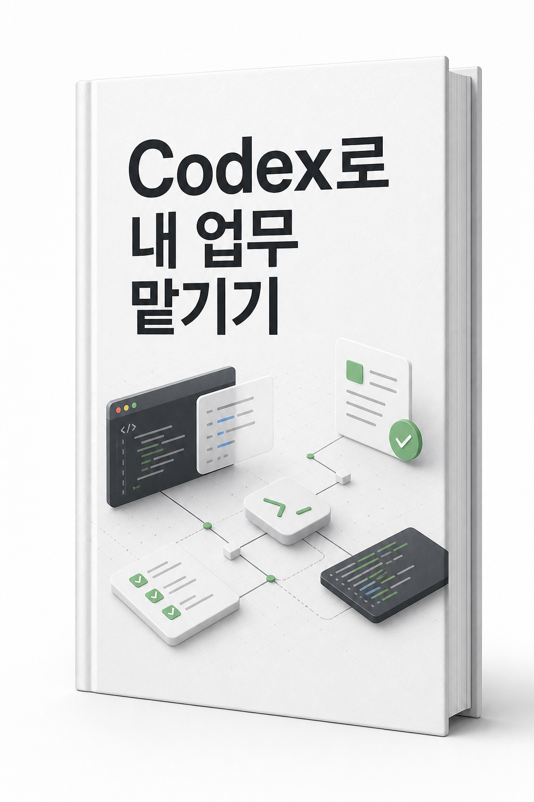

Chat·Quick Chat·Work 구분
빠른 대화인 Chat·Quick Chat과 에이전트 작업인 Work를 구분하고, Work의 On your computer와 In the cloud가 파일 접근과 동기화에서 어떻게 다른지 설명합니다.

이 책은 프롬프트 모음집이 아닙니다. Codex를 하나의 업무 환경으로 이해하고, 맥락을 준비하고, 지시하고, 결과를 검토하고, 다시 맡기는 흐름을 내 업무에 붙이는 방법을 다룹니다. 2026.07.28 제4차 개정판은 Chat·Quick Chat·Work의 차이, Work의 로컬·클라우드 실행, 다중 폴더 프로젝트, GPT-Live, Sites, 병렬 작업과 새 모델 제어를 반영했습니다.
AI에게 이 책을 요약하게 하지 마세요. 직접 1-2시간 시간을 내서 읽으세요. 그만한 가치가 있습니다.
This is not a prompt collection. It explains how to treat Codex as a work environment, prepare context, give instructions, review outputs, and hand the next iteration back. The 2026.07.28 fourth revised edition covers Chat, Quick Chat, and Work; local and cloud Work; multiple source folders; GPT-Live; Sites; parallel tasks; and the updated model controls.
Do not ask AI to summarize this book for you. Set aside 1-2 hours and read it yourself. It is worth that time.
빠른 대화인 Chat·Quick Chat과 에이전트 작업인 Work를 구분하고, Work의 On your computer와 In the cloud가 파일 접근과 동기화에서 어떻게 다른지 설명합니다.
로컬 프로젝트에 여러 source folder를 연결하고 Primary를 정하는 법, 음성으로 작업을 시작·조정하는 GPT-Live, 호스팅과 production 배포를 구분하는 Sites를 살펴봅니다.
독립 작업을 병렬로 운영하는 기준과 기본 슬라이더·고급 모델/추론/속도 제어, Standard·Fast, Max·Ultra의 차이, 반복 업무를 Skill로 만드는 흐름을 정리합니다.
개정 내역· 18개 장 이후의 별도 기록
아직 공개 직후라 실제 독자 후기를 모으는 중입니다. 읽고 도움이 됐다면 짧은 후기나 적용 사례를 보내주세요. 이후 이 영역에 실제 독자 반응을 추가하겠습니다.
후기 보내기Distinguish quick conversation in Chat or Quick Chat from agentic Work, including how On your computer and In the cloud differ in file access and synchronization.
Connect multiple source folders to a local project, choose a Primary folder, start or steer work with GPT-Live, and distinguish saving a Site version from deploying it to production.
Learn safe parallel-task boundaries, the basic slider and advanced model/reasoning/speed controls, Standard versus Fast, Max versus Ultra, and how to create a reusable Skill.
Revision history· Separate record after the 18 chapters
This e-book has just been published, so real reader reviews are still being collected. If it helps you, send a short note or example of how you used it.
Send a review